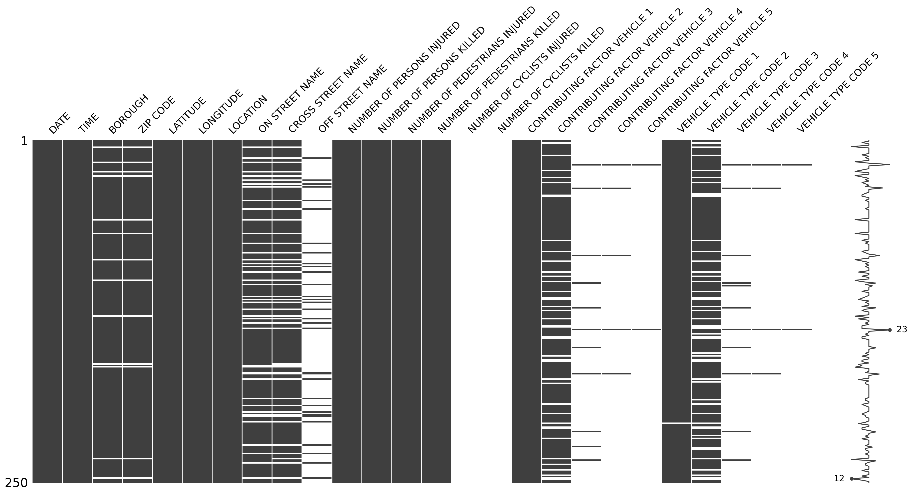
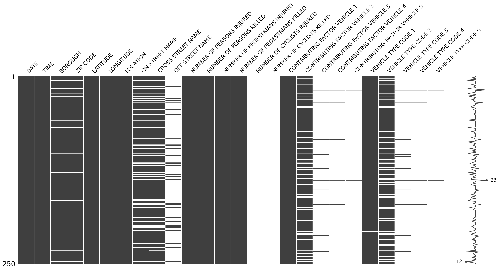

import pandas as pd
import missingno as msno
collisions = pd.read_csv("https://raw.githubusercontent.com/ResidentMario/missingno-data/master/nyc_collision_factors.csv")
msno.matrix(collisions.sample(250))
Why what you don’t know matters

“Dark Data: Why What You Don’t Know Matters” by David J. Hand delves into the crucial concept of dark data — information that is unseen, uncollected, or unanalysed but significantly impacts decision-making and understanding. Hand categorises dark data into 15 types, illustrating the dangers of ignoring such data through historical and contemporary examples like FDR’s reelection polls and the Challenger shuttle disaster. The book highlights how unrecognised dark data can lead to skewed understandings, incorrect conclusions, and flawed actions.
“The first step must always be to be aware there might be dark data. Indeed, your default assumption should be that the data are incomplete or inaccurate. That is the most important message of this book: be suspicious about the data - at least until it is proved they are adequate and accurate.” [1, p. 293]
Hand emphasises the importance of recognising and mitigating dark data, teaching readers to be vigilant about the issues posed by unknown information. He also explores how dark data can be strategically utilised. The book addresses various statistical methods and concepts, underscoring that even in the age of big data, the data available is never complete. Through practical guidance, Hand aims to help readers make better decisions in a world where missing data is inevitable, stressing the significance of understanding what is not known.
“…At least until the scientific revolution… advances in understanding were retarded by a (typically subconscious) reluctance to collect data which might disprove a theory… advances were held back by an unwillingness to make dark data visible…
My favourite historical example of someone who spotted this problem is given by the seventeenth-century philosopher, Francis Bacon, who wrote: “Human understanding when it has once adopted an opinion… draws all things else to support and agree with it. And though there be a great number and weight of instances to be found on the other side, yet these it either neglects and despises, or else by some distinction sets aside and rejects.” ” [1, pp. 167–168]
This human bias may be one of the fundamental flaws in human psychology. It’s something that people consider exists in everyone apart from themselves! My favourite (disputed) quote which has become a widely used example of confirmation bias has been attributed to the American film critic Pauline Kael, on the topic of Nixon’s 1972 U.S. election victory:
“I can’t believe Nixon won. I don’t know anyone who voted for him.”
I have known highly intelligent, capable people whose default position on alternative opinions is not just one of scepticism, but one of objection. And doubtlessly there have also been times when I have fallen into this trap myself. The issue with discounting, excluding and mocking counter opinions is that; on occasion; they are falsifiable and supported by the evidence! Widely accepted dogma can, has been and will be shattered by those willing to think outside of broadly accepted opinion.
My favourite 2 examples of this:
Hand rightfully has quite a bit to say about the reproducibility crisis in academic literature. The author explores reproducibility, publication bias and fraud in this domain. Although these issues may or may not be intentional, they have the potential to frustrate progress and prolong suffering, as exemplified in the case of the recent retraction [5] of an influential study on Alzheimer’s disease published in Nature in 2006 [6]. This paper has been cited more than 2,000 times and used brain scans of patients that have been shown to have been falsified.
Hand goes on to talk about a lesser known practice in academia known as harking:
“Yet another cause of mistaken results is the pernicious practice called”HARKing”, or Hypothesizing After the Result is known…
HARKing can be alleviated by requiring researchers to state their hypotheses before they collect any data. Some scientific journals are considering moving in this direction, guaranteeing publication of a paper regardless of how the results come out…” [1, pp. 198–199]
I thoroughly agree with this suggestion. Wikipedia [7] quotes a study stating that papers with significant findings are 3x more likely to be published than those with null findings. And as the number of publications is broadly interpreted as a measure of success for academic institutions and individuals alike, a systemic pressure for fraudulent practice emerges. I would go even further and suggest that the barriers to journals demanding full reproducibility of analysis - including open and versioned code and data - is now lower than ever. In 2024, every respectable journal can require its contributors to use open source software to increase transparency and prove reproducibility. So why has this practice not been established? I presume there to be inertia in adopting newer tooling. A legacy uplift issue that would present modest overhead for significant gain. After all, most people who undertake their statistical analysis in legacy or proprietary software have a thorough knowledge framework that would greatly assist them in transitioning to open source languages.
Hand adapts the American Statistician Donald Rubin’s description of the causes of missing data into the following:
Hand’s explanation of Complete Case Analysis is an excellent warning to all those new to data science. The very common practice of dropping or imputing missing values from the data can be a very risky business. What if there were an underlying pattern in the missingness? Hand employs a perfectly clear, simple tabular example that have no complete cases, meaning that dropping missing observations would result in no records.
“…if the dark data were not NDD, then even a small reduction in sample size could mean we were left with a distorted data set.” [1, p. 237]
Distorting a dataset could be caused by either dropping records or imputing values for missing observations. There are far too many machine learning tutorials online that carelessly instruct learners to do so, in order to be able to use the algorithm of choice. Mindlessly erasing or imputing records with missing observations would generally mean reversion to the mean but has the potential to propagate algorithmic harm. Could the missing records represent people at the fringes of society, whose data are often challenging to capture? I worry that this practice is far too widespread within the field of data science, as many of the popular machine learning algorithms will not tolerate the inconvenient truth of dark data.
Treating these records should involve a good deal of investigation. Is there a hint in the present data that could explain the missingness? Could correlations with other dimensions in the data mean a more appropriate imputation value based on a sub-group average, rather than the population average? To help python developers assess missingness in a dataset, I highly encourage people to make use of the missingno package. If you write in R, then the equivalent functionality is available with naniar.
The below visual gives an overview of populated records in a data table about road traffic collisions. Dark bands are populated records. White bands are missing records.
import pandas as pd
import missingno as msno
collisions = pd.read_csv("https://raw.githubusercontent.com/ResidentMario/missingno-data/master/nyc_collision_factors.csv")
msno.matrix(collisions.sample(250))
In the above visual, you may see that certain columns demonstrate more missingness than others. But that specific columns show patterns in missingness in comparison with that of other columns too. For example, in records where ON STREET NAME and CROSS STREET NAME are missing, you may find that OFF STREET NAME records are present. This simple visual along with many more useful tools in the package are available to examine the idiosyncrasies within data.
In conclusion, David J. Hand offers an insightful exploration into the realm of unseen, uncollected, or unanalysed data that profoundly impacts decision-making and understanding. Through detailed categorisation and vivid historical and contemporary examples, Hand underscores the critical need to recognise and address the hidden gaps in our data. His comprehensive analysis highlights how ignorance of dark data can lead to flawed conclusions and poor outcomes, while also presenting strategies to mitigate these risks. By encouraging a vigilant and sceptical approach to data analysis, Hand empowers readers to navigate the complexities of incomplete information, ultimately fostering better decision-making in an era where data is ever-present but often imperfect. This book is a valuable resource for anyone looking to deepen their understanding of the unseen dimensions of data and its far-reaching implications.